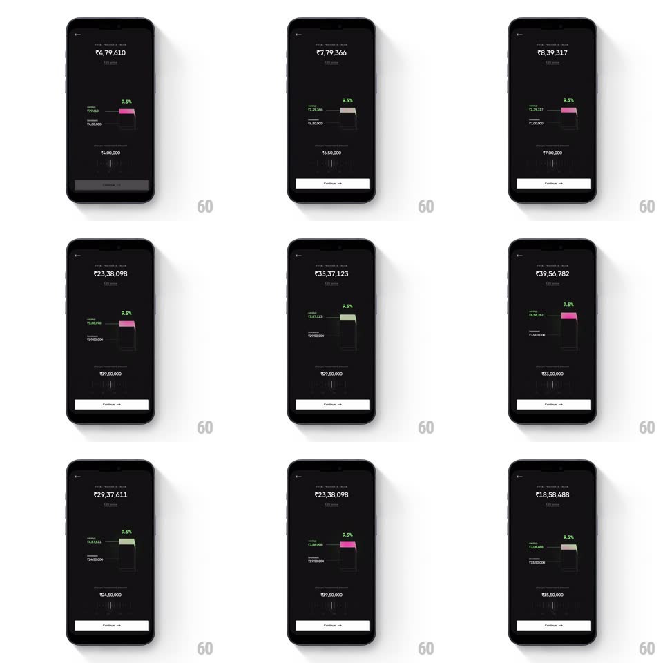

Media
Frame-by-frame

Rebuild this interaction 1:1: CRED's investment slider - drag to change the principal and watch the projected value tick rapidly while a 3D glass bar re-renders its return segment in real time.

Rebuild this interaction 1:1: CRED's investment slider - drag to change the principal and watch the projected value tick rapidly while a 3D glass bar re-renders its return segment in real time. ## Integration Integration: stack-agnostic spec - springs given as stiffness/damping, timed motions as duration + curve; map every value to your framework and animation library of choice. ## Scene A dark investing screen: "TOTAL PROJECTED VALUE" with a large rupee figure on top, a central 3D glass bar showing principal (dark) and returns (pink-to-cream gradient cap) with a green "9.5%" rate tag, "RETURNS" and "INVESTED" sub-values, and a slider at the bottom setting the investment amount, above a Continue button. ## Motion spec Pattern: slider-synced live number ticking + 3D visualization. - Dragging the slider updates the invested amount 1:1 (snapping to 50,000 steps with soft detents, spring ~600/35 on release). - The projected-value figure ticks through intermediate values digit-by-digit (odometer roll, each digit settling in 120ms, rightmost fastest) - ticking continues briefly after release as the value settles to the final projection. - The 3D glass bar animates with the slider: the pink return cap grows/shrinks with the same spring as the slider thumb, with subtle refraction shimmer on its faces as it moves; the bar tilts a few degrees toward the drag direction (+-3deg) and rights itself on release. - Sub-values (returns, invested) crossfade-update on settle, not per-frame. - Haptic tick on each 50,000 step passed; a soft rising tick sound pitch-tracks the value while dragging. ## Calibration - The big number never lags the slider by more than ~300ms - ticking speed scales with drag distance. - The return cap's share of the bar equals returns/projected exactly at rest. ## Reduced motion Values snap without odometer roll; bar resizes without tilt. ## Don't miss - The 3D bar is translucent glass with a gradient cap, not a flat chart bar. - The 9.5% tag stays pinned to the cap's top edge as the bar grows.